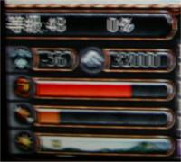

|
2002年7月23日
冰鏡湖夢幻道具測試報告
香港於7月21日在荃灣Cyber Force網吧舉行了天堂真人騷扮o野大賽(Cosplay天堂角色比賽)，當中有一環節是盟主代表、網主代表及Cosplay比賽參賽者，分為兩組，每組各有兩名王族、騎士、妖精及法師，並使用夢幻道具在奇岩競技場中效量，本網人員非常有幸能夠參與是次較量，並親身測試新夢幻道具的力量。
（以下資料只供參考，測試伺服器的設定並不是一定會完全套用在正式伺服器上。）
首先一定要說的是在這個測試伺服器有嚴重的藥水使用頻率限制，例如在使用白水後，大約要等1.5秒才能使用第二支，比以往慢約3-4倍，打雙飛龍時用雙白也會很快死掉（因為根本不能雙白），假如這個更新套用在正式伺服器上的話，相信要擊倒不死鳥及蟻后要附出重大犧牲，而打倒地龍、水龍及火龍的機會亦更加渺茫。
本網人員所使用的角色是妖精，裝備除了有現有的+7非精靈防具，+9精靈防具及+11武器，更有新增的夢幻道具，以下是其親身試驗：
+11沙哈之弓：4/4，雙手，木製，妖精專用，沒有攻擊加成，沒有命中加成；假如身上沒有箭的話，便會射出像光箭一樣的箭，且不會損耗MP；經本網測試後，結論是兩個字：垃圾。在沒箭的狀況下，等級48敏20的妖精每下只能損20-25HP，而且間中會Miss，比有箭時的傷害還要差，而在有箭的時候，則連同級(+11)的十字弓及尤米弓也比不上（因為沒有傷害及命中加成）。本網相信即使是+7的沙哈之弓亦會比+9尤米弓難入手及珍貴，但+9尤米弓平均傷害值會比+7沙哈之弓多4.5，因此沙哈之弓除了Show Off外暫時沒有實際用途。
+0歐吉皮帶：超強的皮帶！全職，在使用後會增加20%的載重量。
使用歐吉皮帶前：

使用歐吉皮帶後：
敏妖在使用歐吉皮帶後可以在82%載重下帶約260-300濃白（用精金甲和帶20魔寶20精玉20綠水及沒有用體魄．．．）
+0泰坦皮帶：妖精不能穿，所以不能測試，但相信會比歐吉皮帶恐怖，但傳言會減慢速度。
+7死亡士騎套裝：全部均為騎士專用，在穿上整套後會變身成死亡騎士，在脫下任何一件都會變回原狀，被相消後需要脫一件後再穿上才會變回死騎。防禦力的資料和韓國官方提供的一樣。
+7惡魔套裝：全部均為全職！因此除了龍鱗甲外，惡魔盔甲將會為法師的最佳盔甲！在穿上整套後會變身成惡魔，在脫下任何一件都會變回原狀，被相消後需要脫一件後再穿上才會變回惡魔。防禦力的資料和韓國官方提供的一樣。
而這次測試並沒有提供新增的項鍊和靴子。
另外本網亦測試了部分妖精魔法（只有共用的魔法），部分忘了正確中文名稱：
心靈轉換(Body to mind)：-5HP +2MP，使用後要等約30-60秒才可再使用，可以與Blood to soul一起使用
Blood to soul：-50HP +20MP，使用後要等約30-60秒才可再使用，可以與Body to mind一起使用，起級好用的魔法，用幾次MP便會滿。
召喚精靈：使用後會"沒有任何時情發生"，應該是未製作的。
召喚強力精靈：使用後會"沒有任何時情發生"，應該是未製作的。
封印戰地(Area of Silence)：使用後法師仍然可以使用魔法來相消，有可能該魔法是未生效或對相消無效的。 |